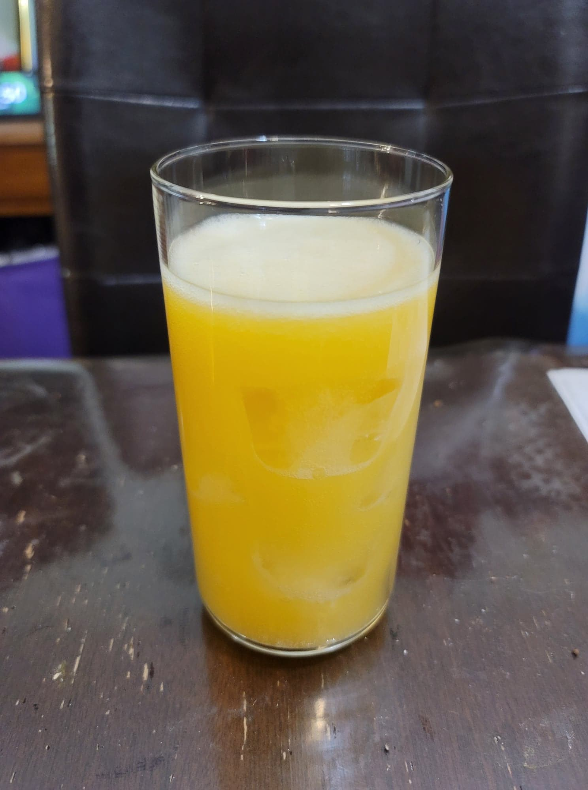

Mango Soda

Ingredients:
- 8 cups Water
- 5 Mangos, blended
- 3/4 cup Sugar
- 1/2 cup Ginger bug
Instructions:
- Place the water, blended mangos, and sugar into a pot and bring to a boil. Reduce the heat to low and simmer, covered, for 10-15 minutes. Then remove from heat and let cool completely to room temperature.
- Strain out all of the mango pulp. Stir in the ginger bug and then transfer to 16 oz flip-top bottles. Let ferment until carbonated to your preference. Then chill in the fridge and serve cold.